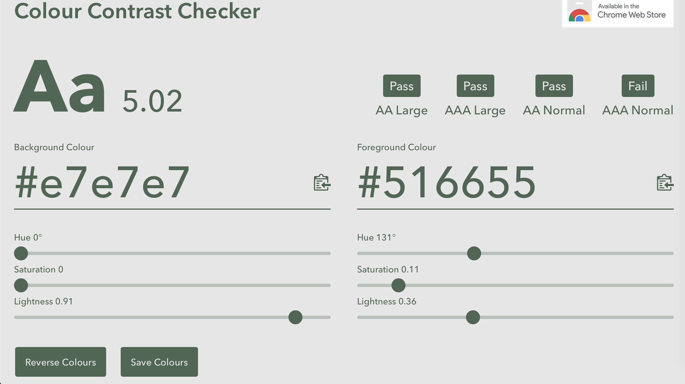

Design
Design Patterns
1. Input prompt
The input prompt can save the space of the website and clearly explain that which type of input is required.
2. Good Defaults
It chooses the default value which is expected to be most of the user going to use. I use the good default on the payment method, and defaulted to the credit card.
3. navigation tabs
I list out the main feature of my wbsite on the navigation bar, the user can be more convenient to access different pages.
4. Shortcut dropdown
When filling in the user personal information, I applied the dropdown selection a lot for the user to choose their country of state. Also in the animal cruelty reporting page, the condition of the animal and other element is used the dropdown selection.
5. Home link
The vertical dropdown menu is used in the mobile version to reduce the feeling of the crowded at the top of the web page. So that the label of the button does not need to reduce the size.
7. Thumbnail
I used the thumbnail to show multiple image at the same time to encourage user to adopt the pet.
8. Slideshow
I use the slideshow to show the responsibility and operation of RSPCA, the user can read the information with the image.
9. Autocomplete
The search bar will record the user search history and they can autocomplete.
Design Principle
1. Emergency
According to Gkogka(2018), she pointed out that under the gestalt principles, the human brain is sensitive to the general outline of the shape. Simple line object can be transferred to a detail object in a quick time. Hence, I created the icon for RSPCA by the gesture of a dog, once the user sees the logo, they can quickly realise that it is related to an animal charity.
2. Proximity

Proximity grouped the same type of elements by the same shape. The perception of the group is clear, every user can clearly know that these elements are in the same category.
3. Common group
For the common group principle, the same perceived element put together and enhance unity.
4. Symmetry
Symmetry bring harmony and visual pleasure to the user, the symmetry principle helps emphasise the decision chosen by the user. In the payment method, I use the opposite colour to show the symmetry, the user can clearly know that they have two options to choose the methods.
5. Colour
I used the colour contrast checker to the colour contrast mainly use on my website, the light grey and green colour. The result shows that my main theme colour has pasted 3 out of 4 test, where the faired test is regarding the smallest size of the test.
6. Shape
My page layout is mainly in rectangle, however, I have applied different type of shapes to the element in the website. I increase the roundness of the rectangle of some button, to increase a feeling of soft to the website to balance between the sharpness of the rectangle. I used circle shape as the metaphor of the coin, it is more friendly and pleasing. At the same time, I have applied different icons (fa fa icon) on the website.
Design changes
Since I have created a huge high-fidelity prototype when designing the system of the website, I have done multiple changes based on the mockup.
In the prototyping stage, I have created 9 main pages on the website, therefore, I reduced to 3 pages. I have planned to create the pet adoption page, however, it is not possible to achieve it because I do not have the database of the pet information, while the adoption website is actually separated from the RSPCA website. Hence, I did not adopt my adoption page design but linked it to the existing page. Since the reduction of the feature, some interfaces have been changed, among the refinement, they are mainly because of the design aspect, my limited programming technique and other elements.
1. The welcoming section
1. BackThe welcome section of the home page is changed, from two images reduced to one image, the image is used as the background image, I tried to change the background to make the welcoming page more unified.
2. The style of the search bar is also modified because of the technique reason.
3. One main slogan added at the middle of the page, it is more encouraging and the purpose is more clear than using two slogans or passages.
4. The shape of the cruelty reporting button is reshaped in a rectangle so that it can contain more information for the user. It includes the phone number of the RSPCA now.
5. The social media button is now following the theme colour of that social media instead of using the same colour. It is because from the feedback I gained from my user, they said that it was wired to see the social media icon are not using their theme colour. It made them feel confused about the reality of the button and decrease their willingness to enter social media.
2. The responsibility and operation section
For the responsibility and operation section, I adopted a similar element from the original design - the slideshow, to the new design. Now, each page of the slideshow shows the responsibility and their operation combining with the animal background, which provides more information to the user instead of only allows them to see the different image. As in my mood board, I chose green and yellow as my main theme colour, I tried to adopt the colour in every element to give a sense of unifying to the user.
2. The donation page
In the donation page, I used a similar style and the same background image of my mockup design, but some elements have changed. Firstly, I combined every step of the donation on one page. I keep the style of the interface so that it looks like the new design is separated into two pages, but it is not. When the users press the next button, the website will scroll down automatically. The users can clearly divide two-step. However, because of the grouping, the progress bar is difficult for me to achieve. I have tried to apply Javascript to write the progress bar feature, but it is different from what I expected. As a result, I removed the progress feature and simply list out the step of donation in the same position.
Another change is the presentation of the donation amount. In the beginning, I was expected to use the scroll wheel to control the amount that the donor wants to donate. However, it was also too difficult for me to do that, it requires higher knowledge of Javascript which I do not contain. Therefore, I used a similar interface and use the radio button and input to replace it.
For the payment method, the interface is similar, I just relocated the elements. I also added a function of disabling the input field when the user claims that their donor address is the same as his/her billing address, it can be more convenient to the user.
2. The cruelty reporting page
For the cruelty and injury report page, the format is similar, I use the sheep image to be the background of the form. Since the top title area is removed, the users can spend less time on scrolling the page, especially in the mobile version. I have also removed the report button at the top right corner and the social media button. From the feedback I gather from my users they said that the report button is redundant and meaningless. As animal cruelty is a serious affair, it is not proper to put the social media link at this page.
Iterations
Optio qui, omnis itaque rerum iusto molestiae necessitatibus deleniti quod tenetur id perspiciatis voluptatum dolorum quisquam eius ipsum non architecto labore! Distinctio, tenetur. Officiis, necessitatibus?